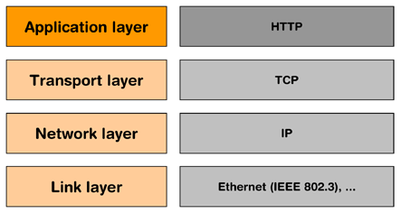
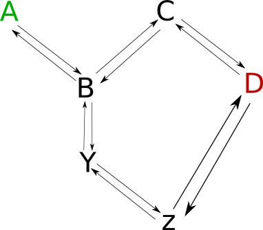

Networking
Info 253: Web Architecture
Kay Ashaolu
The Web Is Built On The Internet

We Use These Phrases
- "Connects to server"
- "Sends response to client"
- "Closes the connection"
What do they mean?
Internet Architecture is Composable
- Emphasize flexibility
- Allow for growth, incremental adoption
- Interchangeable parts
Two Computers Need to Communicate
- String a wire between them
- Send bits across via voltage changes
- Wait for response?
Three Computers Need to Communicate
Get more wire
Circuit Switching
- New computer joins network: wire it up
- Switch the electronic circuit
Network
- Now we have a network
- Mostly computer-to-computer
- How do we communicate between networks?
ARPANET :: Network
- Circuit Switching -> Packet Switching
- Relied on Interface Message Processors (IMPs)
- Government, no commercial traffic
Packet Switching
- Send small packets of information
- Addressed to a receiver
- Can share medium
Internet Protocol
- Moves responsibility to host software
- Keeps packet switching and routing
- Adds concept of ports
Internet Protocol
- Where is the destination? (host addressing)
- How do I get there? (routing)
- Stateless!
Packets travel over networks
- Packets sent from my house to the iSchool's servers
- Destination is specified with a number (IP address)
- Routing is done by forwarding to the next best network

Traceroute
sudo apt-get install traceroute
traceroute ischool.berkeley.edu
traceroute to ischool.berkeley.edu (128.32.78.26), 30 hops max, 60 byte packets
1 10.0.2.2 (10.0.2.2) 0.544 ms 0.293 ms 0.129 ms
2 192.168.0.1 (192.168.0.1) 3.254 ms 3.170 ms 3.162 ms
3 homeportal (192.168.1.254) 8.748 ms 8.729 ms 8.696 ms
4 107-193-136-2.lightspeed.sntcca.sbcglobal.net (107.193.136.2)
37.250 ms 39.226 ms 39.162 ms
...
13 t2-3.inr-201-sut.berkeley.edu (128.32.0.37)
68.950 ms 71.289 ms t2-3.inr-202-reccev.berkeley.edu (128.32.0.39) 71.450 ms
14 et3-47.inr-311-ewdc.berkeley.edu (128.32.0.103)
71.227 ms 71.380 ms et3-48.inr-311-ewdc.berkeley.edu (128.32.0.101) 71.448 ms
...
IP Address
- Numbers, often represented as "dotted decimal" (199.255.189.160)
- But can also be represented as just a number (3355426208)
- IPs assigned by Internet Assigned Numbers Authority
Routing
- Border Gateway Protocol tracks routes to IPs
- ISPs manually configure peers to share information
- Routers use BGP to forward packets
Ethernet
- All computers on the same physical medium
- "Frames" addressed to a receiver